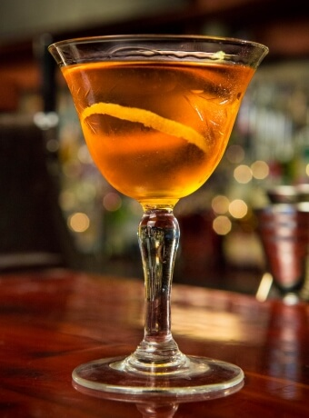

Martinez

Description
The Martinez has been featured in cocktail books since the 1880s and is often referred to as the precursor to the Martini. The original called for a malty Dutch Genever before evolving to an Old Tom gin but in recent years it is often made with a dry gin.
Ingredients
- 45 ml Gin
- 45 ml Sweet Vermouth
- 10 ml Luxardo Maraschino
- 2 Dashes of Angostura Bitters
Steps
- Combine all the ingredients into your mixing glass
- Stir with ice for 30-40 seconds
- Strain into a chilled cocktail glass
- Express lemon oils over the top
- Garnish with a maraschino cherry